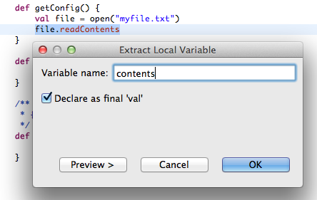
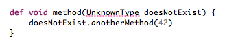
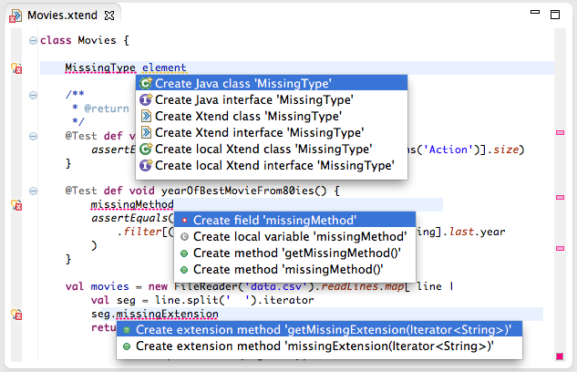
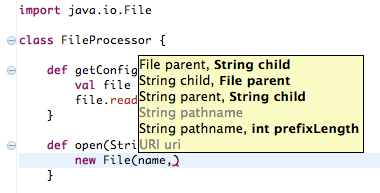
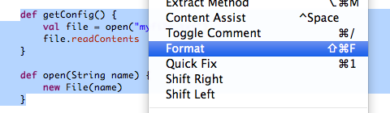
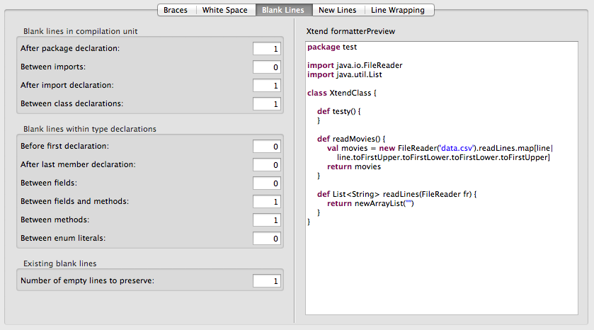
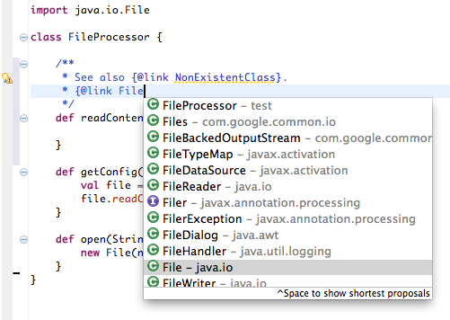
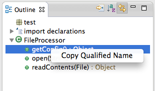

Xtend 2.4.2 Release Notes (June 26th, 2013)
The team is proud to present a release with more than 450 bug fixes and features.
Table of contents
Android Support
Xtend is a great choice for Android application development because it compiles to Java source code and doesn't require a fat runtime library. With version 2.4 the Android support has been further improved.
Debugging
Debugging Android applications works now. Previously Xtend supported debugging through JSR-45 only, which is not supported by the Dalvik VM. Now you can configure the compiler to install the debug information in a Dalvik-compatible manner.
Maven Archetype
There is also a Maven archetype to set up a working Android project easily. If you have installed Maven and the Android SDK you only need the following command to get started:
mvn archetype:generate -DarchetypeGroupId=org.eclipse.xtend \ -DarchetypeArtifactId=xtend-android-archetype \ -DarchetypeCatalog=http://repo.maven.apache.org/maven2
New Language Features
The following new features have been added to the Xtend language.
Streamlined Java syntax
In 2.4.2 we have introduced new (more Java-like) ways to access nested classes and static members. Also type literals can be written by just using the class name.
Here is an example for a static access of the generated methods in Android's ubiquitous R class:
R.id.edit_message // previously it was (still supported) : R$id::edit_message
Type literals can now be written even shorter. Let's say you want to filter a list by type:
myList.filter(MyType) // where previously you had to write (still supported) : myList.filter(typeof(MyType)
If you use the Java syntax (e.g. MyType.class), you'll get an error marker pointing you to the right syntax.
Active Annotations (Provisional API)
Active Annotations let developers particpate in the translation process from Xtend code to Java source code. The developer declares an annotation and a call back for the compiler where the generated Java code can be customized arbitrarily. This doesn't break static typing or the IDE! Any changes made in an active annotation are completely reflected by the environment. A simple example would be a JavaBeans property supporting the Observer pattern. Here you need a getter and a setter method for each field and also an observer list and the proper code to notify them about changes. In many software systems you have hundreds of these properties. Active Annotation allow you to define and automate the implementation of such patterns and idioms at a single point and let the compiler expand it on the fly. And all this based on lightweight, custom libraries. You do no longer have to write nor read the boiler plate code anymore. Read more...
Collection Literals and Arrays
Xtend now has literals for unmodifiable collections.
val listOfWords = #["Hello", "Xtend"]
val setOfWords = #{"Hello", "Xtend"}
val mapOfWords = #{1->"Hello", 2->"Xtend"}
Collections created with a literal are immutable. The list literal can be used to natively create arrays, too. If the target type is an array, it will compile to an array initializer.
val String[] arrayOfWords = #["Hello", "Xtend"]
In addition to literals for arrays you can now also easily access and modify arrays as well as create empty arrays of any size.
val String[] arrayOfWords = newArrayOfSize(2) arrayOfWords.set(0, 'Hello') arrayOfWords.set(1, 'Xtend')
Interfaces, Enums and Annotations
Interfaces, enumerations and annotation types can now be declared directly in Xtend.
interface Container{ def T findChild((T)=>boolean matcher) } enum Color { RED, GREEN, BLUE } @Retention(RetentionPolicy::RUNTIME) @Target(ElementType::TYPE) annotation DependsOn { Class<? extends Target> value val version = "2.4.0" // type 'String' inferred }
Extension Provider
Extension methods allow to add new methods to existing types without modifying them.
Consider the omnipresent class java.lang.String.
If you have to parse a string to a number, you could always write
Integer::parseInt('42')
but what you actually think of is
'42'.parseInt
To make that possible, you simply import the class Integer as a static extension:
import static extension java.lang.Integer.*
This enables to pass the base of the number as an argument, too:
'2A'.parseInt(16)Extension methods are available in other language such as C# as well, but Xtend can do better. The new Extensions Providers render a former limitiation obsolete: In Xtend 2.4, fields, parameters and local variables can provide extensions, too. Read more...
SAM Type Conversion
Lambda expressions now work with interfaces and classes with a single abstract method
(SAM types). For example, the AbstractIterator
from the Guava library has a single abstract method
computeNext(). A lambda can be used to implement that:
val AbstractIterator<Double> infiniteRandomNumbers = [| Math::random]
New Operators
Some new operators have been added. In addition to the usual == and !=
operators which map to Object.equals(Object), the operators === and
!== respectively can be used to test for identity equality.
if (myObject === otherObject) {
println("same objects")
}
Also new exclusive range operators have been introduced. In order to iterate over a list and work with the index you can write:
for (idx : 0 ..< list.size) {
println("("+idx+") "+list.get(idx))
}
Or if you want to iterate backwards :
for (idx : list.size >.. 0) {
println("("+idx+") "+list.get(idx))
}
New IDE Features
Being an Eclipse project Xtend has always been designed with IDE integration in mind. The team is proud to announce that the editing support is now almost on par with Java's and in some aspects already even better. A user recently wrote in the newsgroup:
Tooling for Xtend is unlike any other language for the JVM after Java. The IDE support is first class. It will take years for some languages to catch up. Some never will.
The following new IDE features improve the editing experience significantly:
Organize Imports
With the new release we have overhauled the Organize imports action. It processes all kinds of imports, asks to resolve conflicts, and shortens qualified names automatically.

Extract Method and Extract Local Variable
New refactorings have been added. You can now extract code into a new local variable
or into a new method.

Supression of Follow-Up Errors
Follow-up error markers are now suppressed and errors in general are much more local, so it is very easy to spot the problem immediately.
Optional Errors and Warnings
The severity of optional compiler errors can be configured globally as well as individually for a single project. They can either be set explicitly or delegate to the equivalent setting of the Java compiler.

More Quickfixes
Xtend now offers to create missing fields, methods, and types through quick fix proposals.
Improved Content Assist
The content assist has become much smarter. It now proposes lambda brackets if the method accepts a single function and it offers hints on the parameter types when you are working with overloaded methods.
Formatter
A configurable formatter which pretty prints and indents code idiomatically is now available.
 JavaDoc
An Xtend editor now has validation and content assist within JavaDoc comments.
Copy Qualified Name
You can use Copy Qualified Name in the editor and the outline view to copy the name of types, fields and methods into the clipboard.
